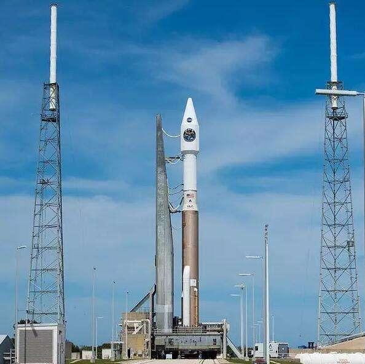
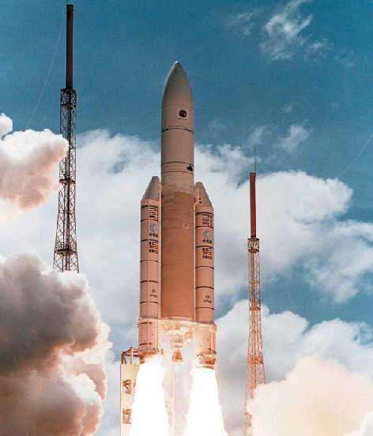
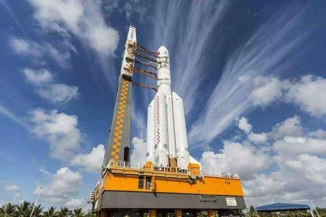
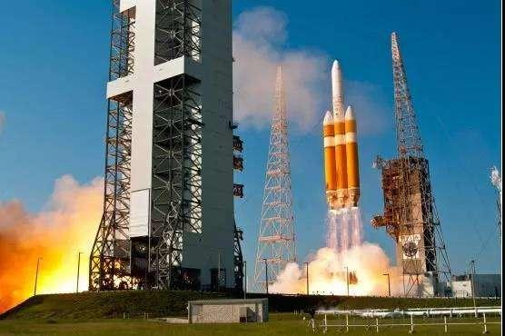
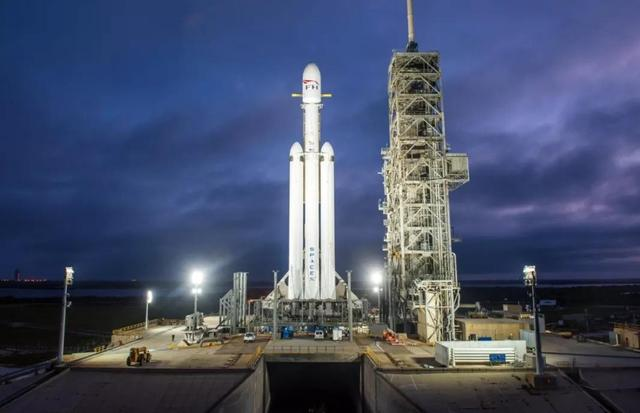
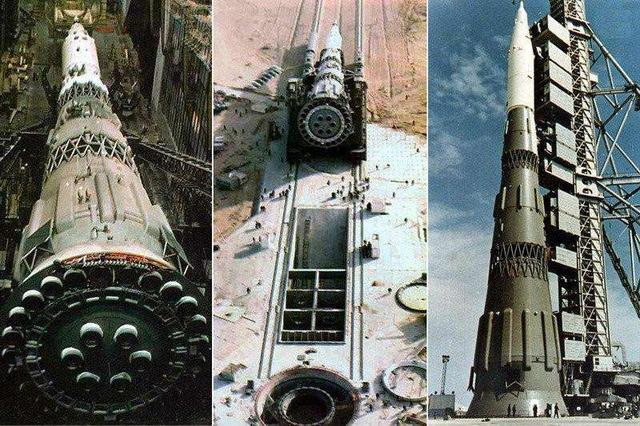
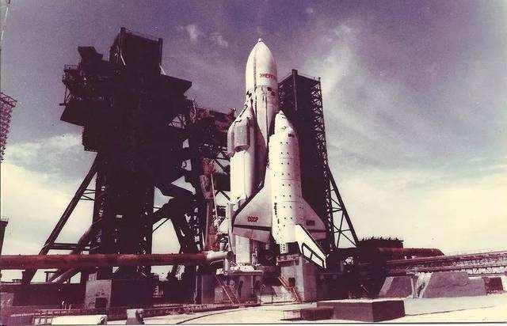
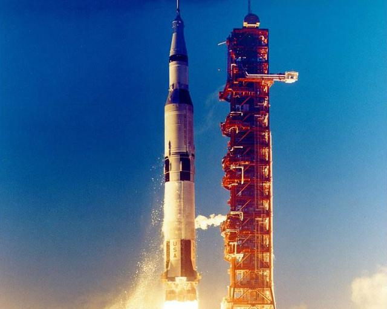

火箭是将航天器送入星际空间的工具，承载着人类的梦想划破天际，进入浩瀚星海。那么历史上各国所研制火箭的运载能力排名如何呢？ 一起来看看吧！
第八名：宇宙神V

国籍：美国，高58.3米，起飞质量569吨，2016年首飞
运载能力：近地轨道19.8吨，地球同步转移轨道9吨
第七名：阿丽亚娜5型

国籍：欧洲，高59米，起飞质量760吨，1996年首飞
运载能力：近地轨道21吨，地球同步转移轨道10.5吨
第六名：长征五号

国籍：中国，高63米，起飞质量879吨，2016年首飞
运载能力：近地轨道25吨，地球同步轨道14吨
第五名：德尔塔IV

国籍：美国，高71.6米，起飞质量733.4吨，2004年首飞
运载能力：近地轨道28.79吨，地球同步轨道14.22吨
第四名：重型猎鹰

国籍：美国，高70米，重1420.8吨，2018年首飞
运载能力：近地轨道63.8吨，地球同步轨道26.7吨
第三名：N1（退役）

国籍：苏联，高105米，重2735吨，1969年首飞
运载能力：近地轨道95吨，月球转移轨道23.5吨（事实上N1火箭从未成功服役， 作为苏联为登月准备的超级火箭，由于种种问题四次发射均告失败，上榜以示惋惜）
第二名：能源号（退役）

国籍：苏联，高58.8米，起飞质量2400吨，1987年首飞
运载能力：近地轨道100吨，地球静止轨道23.5吨
第一名：土星5号（退役）

国籍：美国，高110.6米，起飞质量3038吨，1967年首飞
运载能力：近地轨道118吨，月球转移轨道45吨